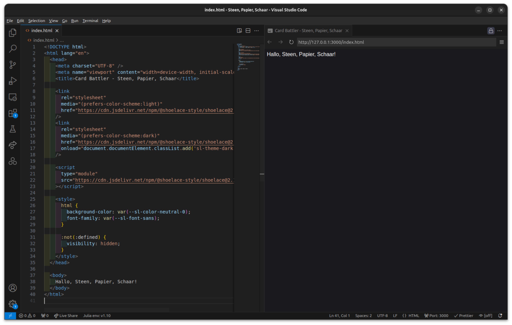

#
Categorie: Activiteiten
Bekijk alles categorieën.
Activiteiten
Card Battler
Tijdens deze activiteit gaan we een “ card battler” maken. Denk bijvoorbeeld aan de Pokémon Trading Card Game

Activiteiten
Steen, Papier, Schaar
Als eerste stap in het bouwen van een card battler, gaan we een versie van steen, papier, schaar maken.
Activiteiten
Codecademy
Hier in deze tutorial ga ik je leren hoe je een cursus begint bij codecademy.

Activiteiten
Stappenplan beginnen bij Codecademy
Als eerder uitgelegd in de intrductie gaan wij leren programmeren en coderen met hulp van Codecademy.
Activiteiten
A-Maze-ing
Activiteiten
Zombie Shooter
Sprites